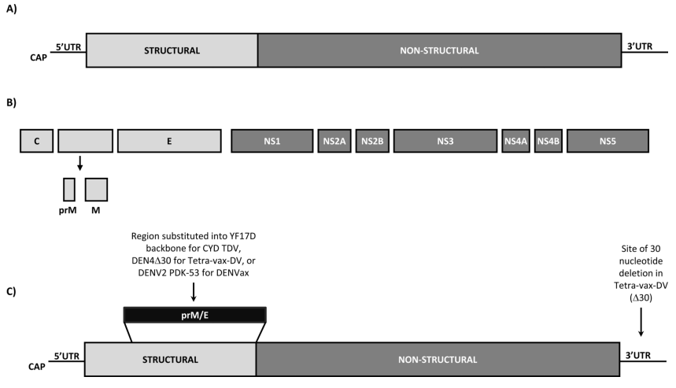
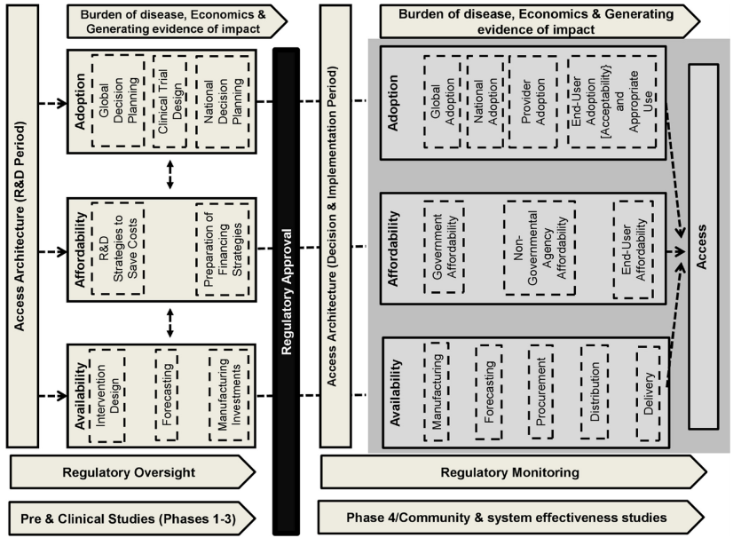
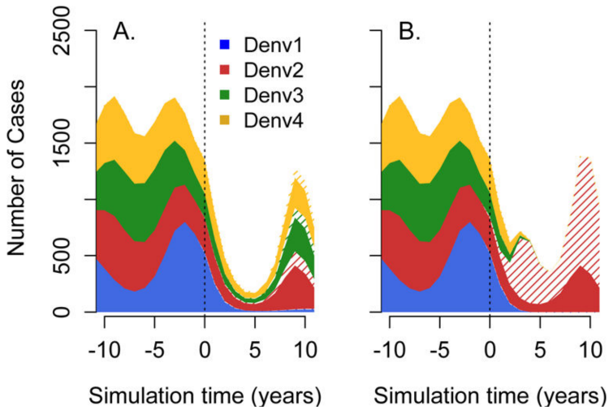

Dengue Vaccine: Problems and Prospects
Christopher Wetherill
TBMH 5054
Some background
- Eleven kb ssRNA virus with four antigenically distinct serotypes
- Circulates throughout Southeast Asia, Africa, and the Americas
- Genome encodes 3 structural (capsid, C, membrane, M, and envelope, E) and 7 non-structural proteins
- E protein is a major target of many dengue vaccine candidates (contains a domain on virion surface with multiple type-specific neutralizing epitopes)
The Dengue Genome

doi: 10.1586/14760584.2013.815412
Impediments to Vaccine Development
Numerous difficulties in developing an effective DENV vaccine have been identified, including:
- The epidemiology of the 4 DENV serotypes;
- Following WWII, DENV has spread rapidly and DENV 1–4 serotypes now co-circulate in several regions
- Many regions lack adequate dengue surveillance
- The complex, poorly understood immunopathogenic responses infection elicits (e.g., cytokine storm); and
- The lack of validated animal models of dengue
Current Limits to Animal Models
- Immunocompetent mice fail to develop clinical symptoms (analogous to human) following DENV infection
- Severe combined immunodeficiency mice have been shown to support DENV replication
- ΔIFN receptor mice support viral replication; however, lack of IFN receptors limits possible immune responses
- Non-human primates can be naturally infected, but are asymptomatic
- Other animal models including rabbits and miniature swine are being investigated
Vaccine Candidates: (Pre-)Clinical Development
- Live attenuated vaccines
- Several phase 1 and 2 trials of mono- and tetravalent formulations ongoing
- Current LAVs for other flaviviruses (yellow valley fever virus and Japanese encephalitis virus) have proven safe and effective
- Purified inactivated vaccines
- Shown to induce neutralizing antibodies
- Typically more expensive to manufacture, but safe in immunosuppressed individuals
Vaccine Candidates: (Pre-)Clinical Development
- Recombinant subunit vaccines
- Similar benefits to purified inactivated vaccines
- Primarily based on E protein of DENV
- Virus vectored and VLP-based vaccines
- More closely approximates natural presentation of DENV surface antigens
- Shows significant boosts in neutralizing antibody responses following challenge
- May be useful in a prime-boost strategy with LAV as the booster
Vaccine Candidates: (Pre-)Clinical Development
- DNA vaccines
- Consist of gene sequence cloned into plasmid backbone
- Plasmid taken up by APCs which then express plasmid-encoded genes to generate target antigens
- Heterologous prime-boost strategies
- Initial immunization with one type of vaccine is followed by boost with a second
- Strategy has shown improved immunogenicity for other pathogens
- Order of administration and specific antigens used may be critical in determing efficacy
Challenges to Vaccine Implementation
- Cost always a major limiting factor
- Some indication that governments would be willing to pay $0.50—$1.00 per dose
- Estimates suggest cost of production $0.20—$1.75 per dose
- Cost of refrigeration can hinder widespread adoption
- May see drop-off if follow-up boosters are required
- Possibility of immune interference by DENV vaccine when given in combination with other flavivirus vaccines
Reducing Barriers to Market

doi: 10.1016/j.vaccine.2013.12.061
Perils of Imperfect Vaccines

doi: :10.1016/j.vaccine.2013.11.020
References
Durham, D., Mbah, M., Medlock, J., Luz, P., Meyers, L., Paltiel, A., & Galvani, A. (2013). Dengue dynamics and vaccine cost-effectiveness in Brazil. Vaccine, 31, 3957 - 3961. doi: 10.1016/j.vaccine.2013.06.036
Khalil, S., Tonkin, D., Mattocks, M., Snead, A., Johnston, R., & White, L. (2014). A tetravalent alphavirus-vector based dengue vaccine provides effective immunity in an early life mouse model. Vaccine, 32, 4068 - 4074. doi: 10.1016/j.vaccine.2014.05.053
Mahoney, R. (2014). The introduction of new vaccines into developing countries. V: Will we lose a decade or more in the introduction of dengue vaccines to developing countries? Vaccine, 34, 904 - 908. doi: 10.1016/j.vaccine.2013.12.061
McArthur, M., Sztein, M., & Edelman, R. (2013). Dengue vaccines: recent developments, ongoing challenges and current candidates Expert Reviews in Vaccines, 12, 933 - 953. doi: 10.1586/14760584.2013.815412
Rodriguez-Barraquer, I., Mier-y-Teran-Romero, L., Schwartz, I., Burke, D., & Cummings, D. (2014). Potential opportunities and perils of imperfect dengue vaccines. Vaccine, 32, 514 - 520. doi: 10.1016/j.vaccine.2013.11.020